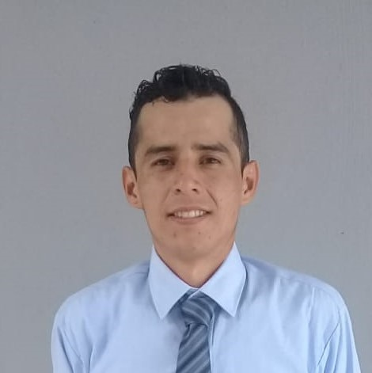
Castor Silva Antonio Eduardo
Ing. en Sistemas Computacionales
Web Developer Junior
Web Developer Junior


Basic knowledge in programming languages for the creation, programming and implementation of web pages and mobile applications.


Basic knowledge in programming tools for the creation, programming and implementation of web pages and mobile applications.
Mi name is Antonio Eduardo Castor Silva, I am 31 years old and I live in the city México(CDMX). I consider myself an serius person, honest, responsible, whit leadership skills, team work, dynamic, creativity and work under pressure, eager to learn things and develop them.
I also consider that Iam a self-taught, enterprising, empathic, dedicated person and in search of both personal and work stability for a better quality of life.
To do this, I would like to collaborate whit a company that gives me the opportunity to demonstrate all me knowledge, strategies, tools and skills in order to meet that goal.
Mi nombre es Antonio Eduardo Castor Silva, tengo 31 años y radico en la CDMX. Me considero una persona seria, honesta, responsable, puntual, con capacidad de liderazgo, trabajo en equipo, dinámico, creativo y trabajo sobre presión, con muchas ganas de aprender nuevas cosas y desarrollarlas.
También considero que soy, una persona autodidacta, emprendedora, empatica, dedicada y en busca de estabilidad tanto personal como laboral para una mejor calidad de vida.
Para ello, me gustaria colaborar con una empresa que me brinde la oportunidad de demostrar todos mis conocimientos, estrategias, herramientas y habilidades con el fin de cumplir ese dichoso objetivo.
Personal Portfolio, created with HTML, CSS and JS.
We also used an NPM library and the page was optimized with WEBPACK. Basic SEO structure used for search engine semantics
Here you can see my profile on Github where the repository is located. You will also find other projects that I have previously generated

This program was created for the preparation of the COMIPEMS exam process in public and private high school students.
With the aim that students remain in their first options for the upper middle level.
This program is functional for children with difficulty concentrating, since it is very practical and easy to understand.
In this project I help to contribute solutions and its development
Creation of databases for the collection and organization of the information obtained or generated as customer or product.
My knowledge in database development is basic but I'm still studying Databases.
I have personal projects and certificates that guarantee it.

Development of simple, practical and easy-to-play videogames. They are created with programming languages like html, css and java.
These games are created in order to learn how they work and then create larger or more complicated video games.
You can check the code in my Github profile.
The Diploma in development of web pages and mobile applications was 100% specified, with a rating of 9.7 where there is a diploma in physical
There are also courses that reinforce the diploma for greater knowledge, I recommend taking this diploma since in it you will find the first steps to learn programming.
Here I leave my profile so you can see the path I've traveled.
I have an intermediate level in knowledge of creating, assembling and programming drones with or without arduino or another device. Other knowledge obtained is the creation and development of wireless audio devices and some video devices.
I obtained this knowledge in a self-taught way and I have certificates that guarantee said experience.
 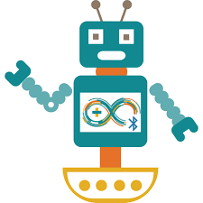
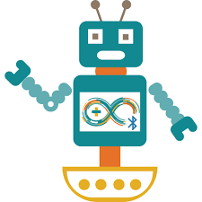  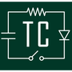 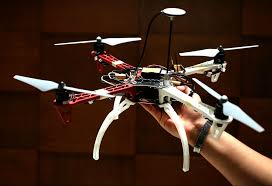
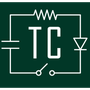 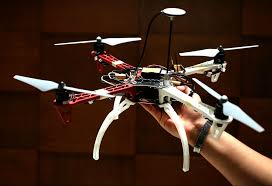Basic knowledge in cell phone repair of all kinds such as: releases, unlocking, cleaning, account unlocking, screen changes and more.
This knowledge was obtained in a labor and academic way where I have certificates that support it.
You can access this medium where you will see the cell phone repair course that I took at 100%
 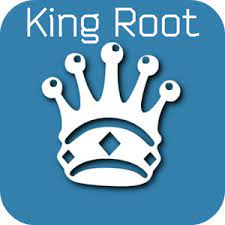 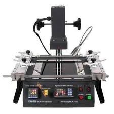 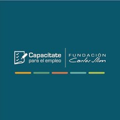
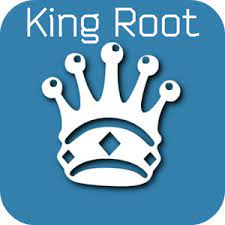 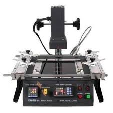 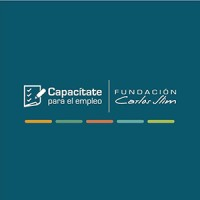 Currently at the Virtual University of the State of Guanajuato is where I study Computer Systems Engineering.
The Academic Trajectory is 41 subjects which I have studied 13 subjects with an average approx. by subject is 8.0
My general average is 86.31 and a total of 32% completed.
You can see my academic career in this link